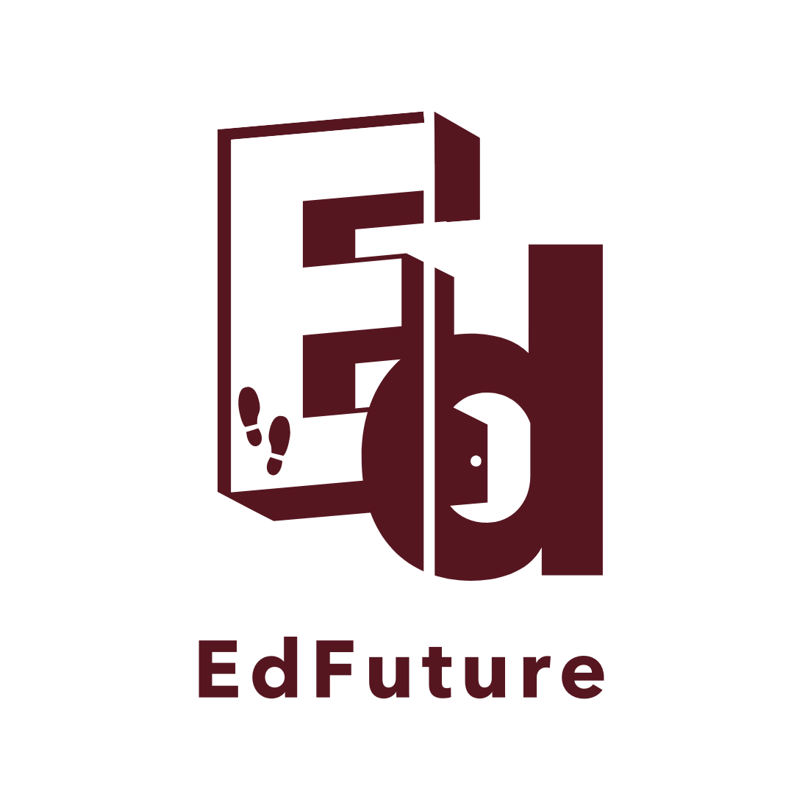
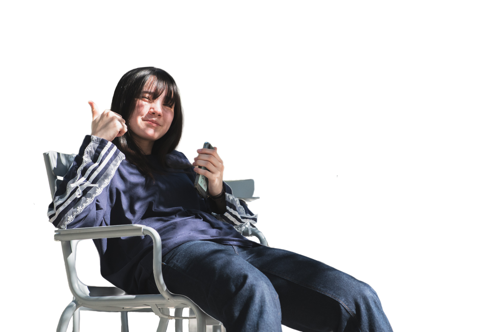
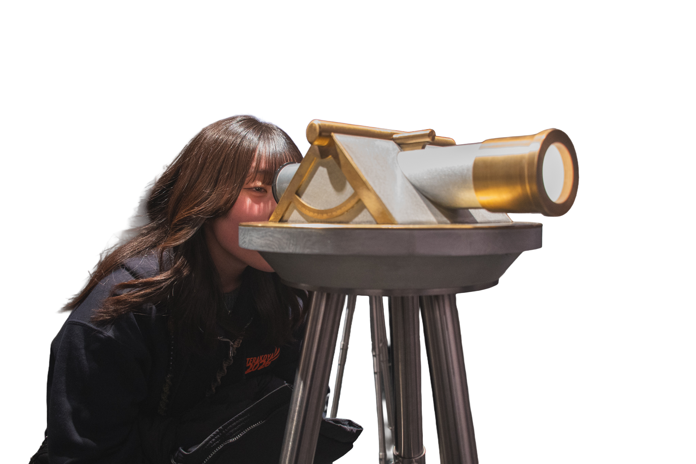
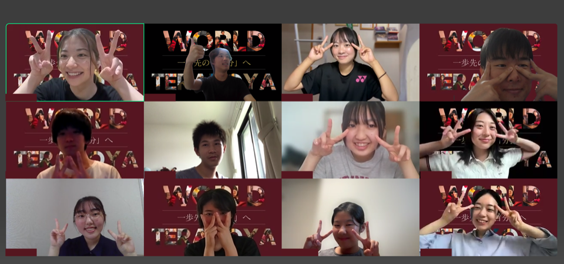
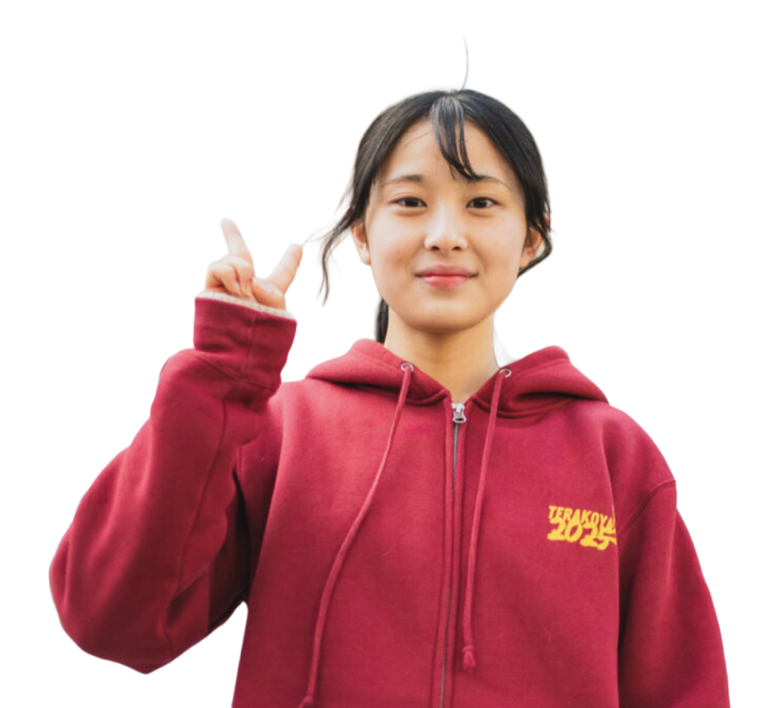
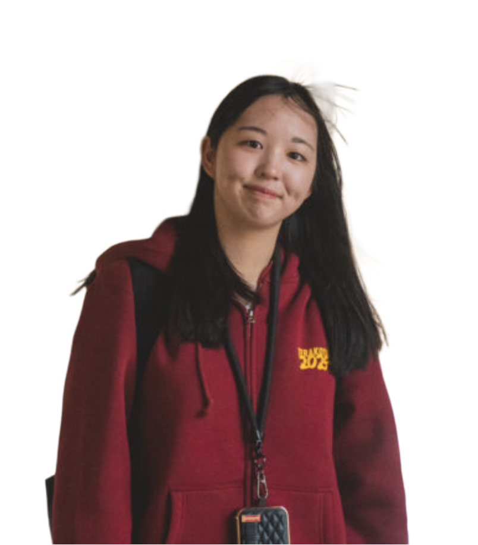
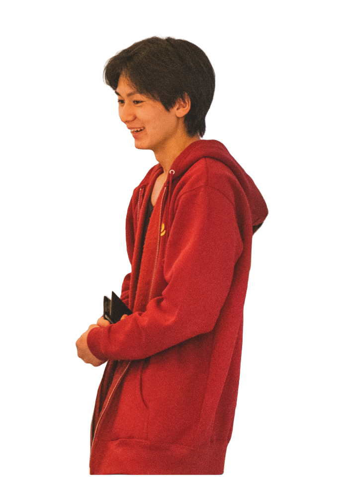
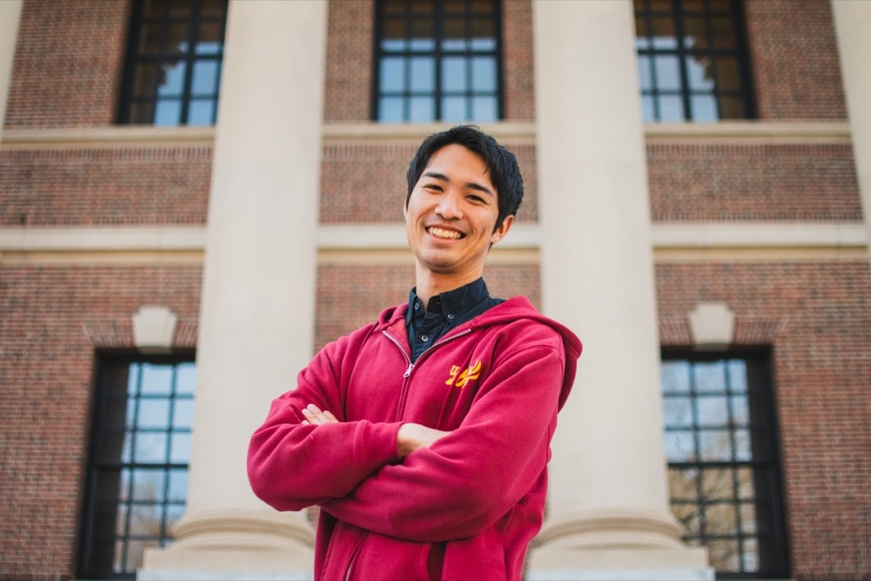

全国の高校生・大学生へ・全国から参加できる
・探究プログラムで
・世界に一歩踏み出す。海外に行ったことがなくても
英語を流暢に話せなくても。
さぁ、君は何に挑戦する？


What is GP?
全国の高校生・大学生が、ハーバード・スタンフォード・MITなど世界トップ大学の学生とオンラインで繋がり、デザイン思考を用いて社会課題に取り組む探究型プログラムです。

3 Key Points
ハーバード・MIT・スタンフォードの現役学生から、リアルな経験を聞ける
知識を詰め込むだけじゃない。実際に行動し、失敗し、学ぶプログラム
地方でも、海外経験がなくても、誰でも参加できる
A Golden Ticket for Top Performers
グローバルプロジェクトの修了者は「ワールド寺子屋2027(短期海外研修)」の一次選考が免除されます。さらに、優秀者は参加権を獲得します。プログラムでの学び→実際の海外経験という、明確なステップアップの道を用意しています。
voice
探究テーマ：
「皆が特性を持ったありのままの自分を肯定できるには？」

Arata
Chocho探究テーマ：
「発展途上国の子どもたちが働きながら学べる環境づくり」
探究テーマ：
「どんな人でも一歩を踏み出すには、何が必要？」

ZenjiScholarship is available
EdFutureは、すべての人が安心して挑戦できる環境を目指しています。地方在住の方、経済的に不安がある方のために、地方応援枠・奨学金枠を用意しています。
首都圏(東京・神奈川・埼玉・千葉・大阪)を除く地域在学者
準生活保護世帯・住民税非課税世帯など経済的困難がある方
合計約10名程度、給付型(返済不要)、受給決定時は参加費用が全額免除
education For future

free information session
✓ 保護者・友達との参加もOK
✓ 完全無料・オンライン開催
✓ 少しでも気になったら、まずは説明会へ
requirements and fee
FAQ
まずはオンライン無料説明会へ。
英語力・成績不問。全国どこからでも参加OK。
NEXT SESSION
5月31日(日) 9:00〜10:00
完全無料・オンライン開催
※ Googleフォームに移動します